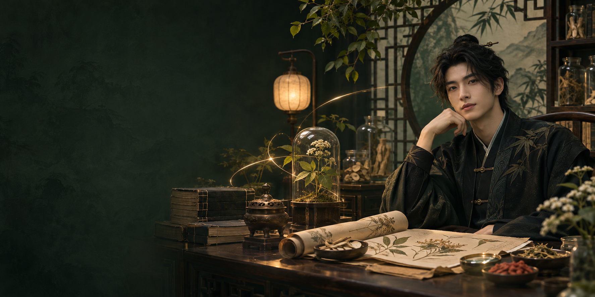

01 / CHINESE MEDICINE CULTURE
中医文化
与学习笔记
从大学学习中医康复治疗，到医院康复科实习，这些经历让我开始关注人与身体，也让我更珍惜耐心、倾听和细致的观察。
这里会记录我对中医文化与康复领域的学习和思考，让复杂的内容更容易被理解。
学习线索：经典文化 · 康复观察 · 我的笔记
你好，我是刘少康。从中医康复的学习经历出发，探索中医文化、本草、药膳与传统健身，也用 AI 和内容创作记录那些值得被看见的故事。

HELLO, I'M SHAOKANG我来自河南周口，目前生活在浙江义乌。大学学习中医康复治疗，曾在医院康复科实习；后来做过外贸客服，也服务过旅游咨询业务。
我喜欢旅行、探索各地的生活与美食。现在，我希望把对人与故事的兴趣带进个人 IP 与内容创作，也继续认识中医药文化。
从典籍到本草，从一餐一味到身体的舒展。这里是我持续学习、记录与分享的四个方向。
以学习者的视角，把传统文化、自然与生活中的观察，整理成可以分享的内容。
从大学学习中医康复治疗，到医院康复科实习，这些经历让我开始关注人与身体，也让我更珍惜耐心、倾听和细致的观察。
这里会记录我对中医文化与康复领域的学习和思考，让复杂的内容更容易被理解。
学习线索：经典文化 · 康复观察 · 我的笔记
从药材的来源与植物形态，到它在传统文化中的故事，本草为认识自然提供了一扇窗。
我想用图文整理学习线索，逐步分享有出处的本草内容。AI 生成的图片仅作氛围示意，不用于药材鉴别。
探索线索：植物与标本 · 本草文化 · 图文记录
参考：香港浸会大学中医药数字化项目 ↗饮食里藏着地方风物，也承载着人们对食材与季节的认识。我想从食材、制作方式和文化故事出发，了解药膳的不同面貌。
内容以饮食文化与学习分享为主，不提供个体化用药或疗效建议。
探索线索：食材故事 · 饮食文化 · 四季灵感
太极拳、八段锦等传统运动，有着各自的动作与文化背景。这里从学习者的视角，记录我对传统运动的兴趣和认识。
每个人的身体情况不同，运动方式应结合自身情况，必要时咨询专业人士。
探索线索：太极文化 · 八段锦 · 身体与生活
本站内容主要用于文化和学习交流；图片为 AI 创意示意，不用于诊断、用药或药材鉴别。
从河南周口到浙江义乌，从外贸客服到旅游咨询，不同的经历让我遇见了许多人，也让我更珍惜真诚的沟通。
我喜欢旅行、各地的美食与生活气息。重庆的烟火气让我印象深刻，也期待未来解锁更多城市和故事。
从学习经历到个人 IP 探索，这是一段关于好奇、成长与表达的小小自述。